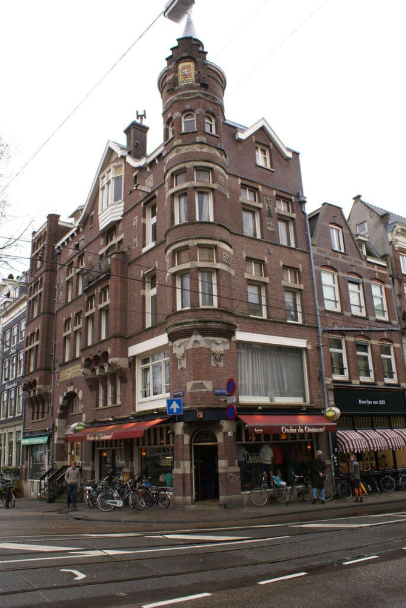
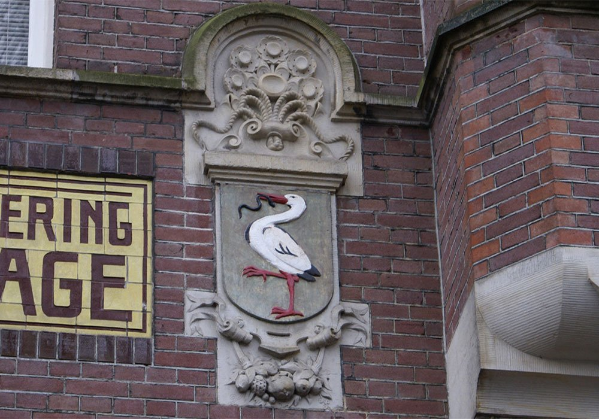
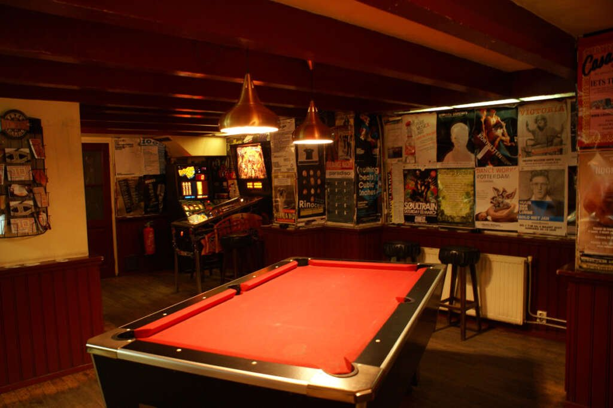
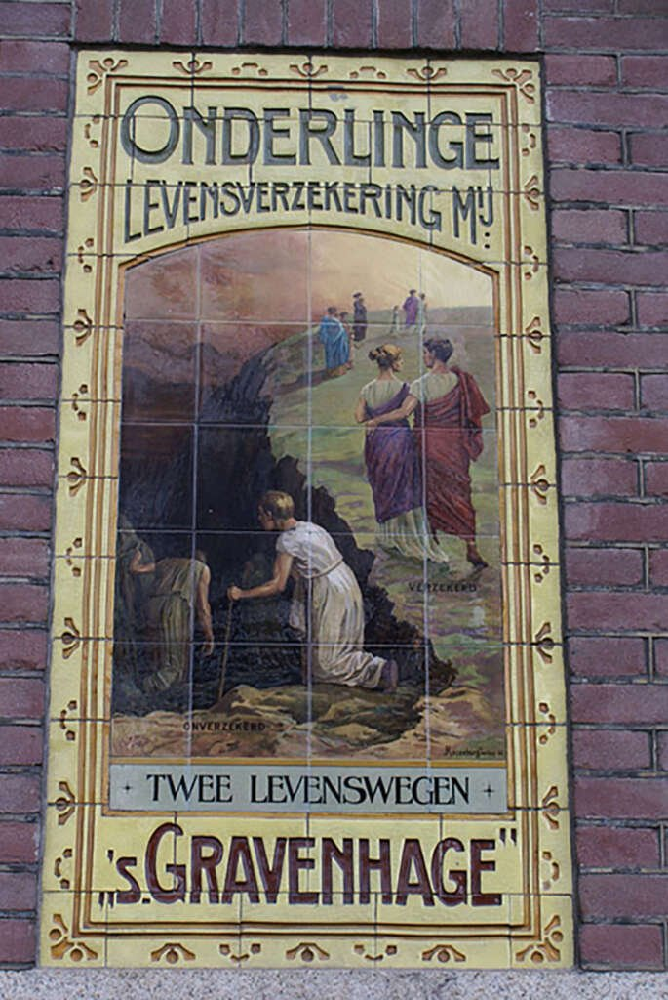
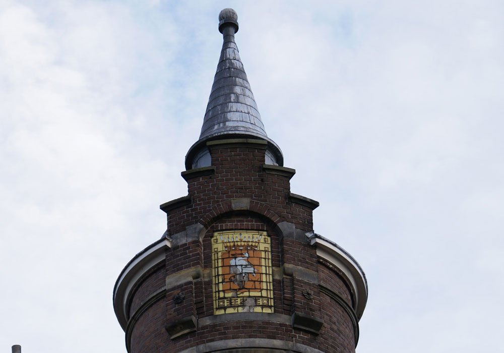
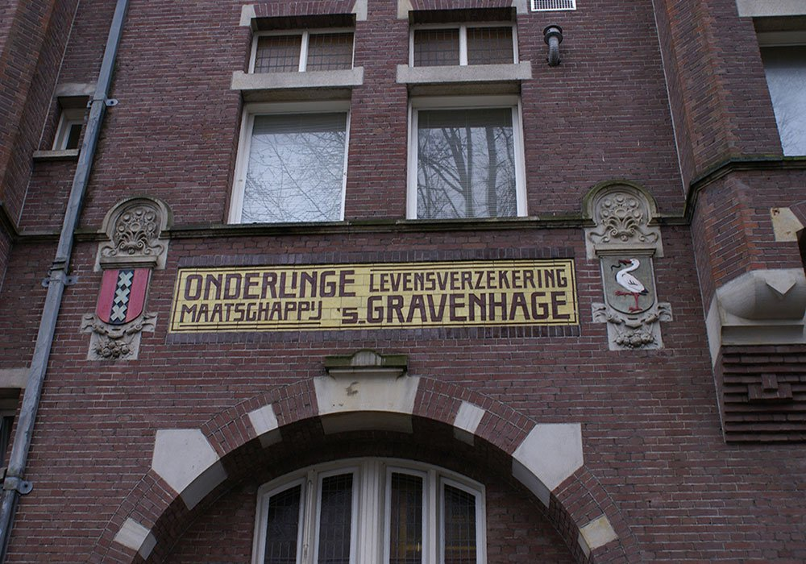
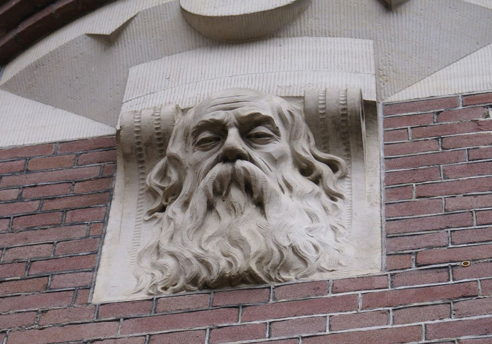

wo 23 dec
Kerst-pubquiz
Aanvang 20:00. Teams van maximaal 4 personen, inschrijfgeld 10 euro per team. Geef je op via een mail met als onderwerp "Pubquiz".
Opgeven voor de pubquizBruin café aan de Utrechtsestraat, Amsterdam
Eten, drinken en een fijne sfeer. Heerlijk eten, geweldig bier, live sport en prachtige mensen, elke dag sinds 1996.
Elke dag open vanaf 10:00


wo 23 dec
Aanvang 20:00. Teams van maximaal 4 personen, inschrijfgeld 10 euro per team. Geef je op via een mail met als onderwerp "Pubquiz".
Opgeven voor de pubquizelke zondag
7 inches and more: DJ's Hans en Jurgen draaien platen, van 20:00 tot 01:00.
De keuken is dagelijks open tot 17:00 uur. Kijk ook op het schoolbord voor de dagelijkse specials en de aanbieding van de week.

€ 11,00
325 gram rund- en varkensvlees in jus met 't IJ Natte bier, met Amsterdams zuur, mosterd en brood.
"Eerste bezoek in de Europese Tour was in Cafe Onder de Ooievaar, waar we een aantal geweldige traditionele Nederlandse gerechten probeerden samen met de beroemde Nederlandse gehaktbal van chef Stephan."
Culinary Crossings, een Engelse filmploeg die traditioneel eten in beeld brengt, op YouTube
Zoveel mensen, zoveel smaken. Onze bieren zijn zorgvuldig geselecteerd om alle bierliefhebbers tevreden te stellen: een ruim assortiment op fles en op de tap. Op twee wisseltaps komen seizoensbieren en andere bijzondere bieren. Kijk op het bord voor de andere tapbieren of vraag het een medewerker.

Noblesse 5,5%, € 5,40
Een blond bier met een stevige hopsmaak, gebrouwen in Baarle-Hertog. In oude Mechelse kronieken valt te lezen dat keizer Karel V rond 1550 de voorkeur gaf aan het "sap van de dochter van de korenaar" (bier) boven het "bloed van de druivenstros" (wijn).
Passe-Partout 3,0%, glutenvrij, € 5,20
Een soepel en smaakvol laag-alcoholisch IPA-biertje. Excellente hopsoorten uit Amerika en Nieuw-Zeeland en de subtiele toepassing van mout zorgen voor een lekker fris accentje.

Onder de Ooievaar heeft 3 tv's waarop belangrijke sportevenementen te zien zijn. Het zal geen verrassing zijn dat dit voornamelijk voetbal is, waaronder de Eredivisie, maar ook de Olympische Spelen of bijvoorbeeld tennisfinales zijn bij ons te zien.
En onder het genot van een drankje een spelletje pool spelen kan ook, in de kelder.
In 1953 kwam het eerste café in de Utrechtsestraat 119, Café Schut. Daarvoor zat Goldschmeding pianohandel in het pand, en daarvoor een verzekeringsmaatschappij uit Den Haag, die het pand heeft laten bouwen. Zoals wij in Amsterdam het wapen met de drie kruisjes kennen, zo kennen ze in Den Haag de ooievaar. Die ooievaar is op verschillende plekken op het pand aangebracht.
Op de gevel aan de Prinsengracht zit een ooievaar en een prachtig tegelwerk. Het beeldt twee groepen mensen uit. De ene groep is schamel gekleed en loopt ongelukkig naar beneden, een donker gat in: "Onverzekerd". De andere groep is keurig gekleed en loopt omarmd naar boven, waar het zonlicht hen tegemoet schijnt: "Verzekerd". Het verschil tussen hel en hemel, zo is duidelijk.
Boven in het pand staat een torentje met een mozaïek van het wapen van Den Haag, de ooievaar. En in het pand zijn prachtige stenen koppen gemetseld.
Zodoende dus: Café Onder de Ooievaar.




Op 31 augustus 1995 kopen Glenn Swart, Jacques Driessen en Alan Sodenkamp het café op de Utrechtsestraat 119. In het pand zat toen Café Perry. De drie ondernemers besluiten het hele café casco te maken, want het geheel is een oude bende.
Met hulp van vele vrienden en na maanden van zwoegen en stress opent Café Onder de Ooievaar op 29 februari 1996 de deuren. De ondernemers, die al jaren samenwerkten in muziekcafé De Korte Golf, maken er een drukbezocht café van.
"Typisch Nederlands bruin café. Goede keuken en vriendelijk personeel op toplocatie!"
"Heerlijk rustige kroeg net buiten het gewoel van de toeristen. Bier van Brouwerij 't IJ op de tap. Bitterballen en pinda's op tafel. Uitzicht op de gracht. Top plek."
"Gezellige Amsterdamse kroeg. Vele soorten bier. Beroemd om de gehaktballen."
"Prima kroeg. Leuk assortiment bieren met wisseltap. Goede, vriendelijke, kundige bediening. Gesitueerd op een mooie locatie met groot terras."
"Heerlijke bruine kroeg met fijn terras en poolbiljart in kelder."
"Grote selectie van bieren, vriendelijk en bekwaam (over bier) personeel. Eten was A1++. Sterk aanbevolen."
Ook te vinden bij Tripadvisor, Time Out, Yelp, Restaurant Guru, Eat Your World, Travel network, Ratebeer, In Your Pocket, Fodor's, Foursquare en Trip.com.
| Maandag | 10:00 – 01:00 |
|---|---|
| Dinsdag | 10:00 – 01:00 |
| Woensdag | 10:00 – 01:00 |
| Donderdag | 10:00 – 01:00 |
| Vrijdag | 10:00 – 03:00 |
| Zaterdag | 10:00 – 03:00 |
| Zondag | 10:30 – 01:00 |
Keuken elke dag open tot 17:00.
Tramlijn 4 stopt voor de deur, halte Prinsengracht. Verder in de buurt: tram 14 en 24, metro 53 en 54, bus 22, 41, 305, 320, 347 en 397.